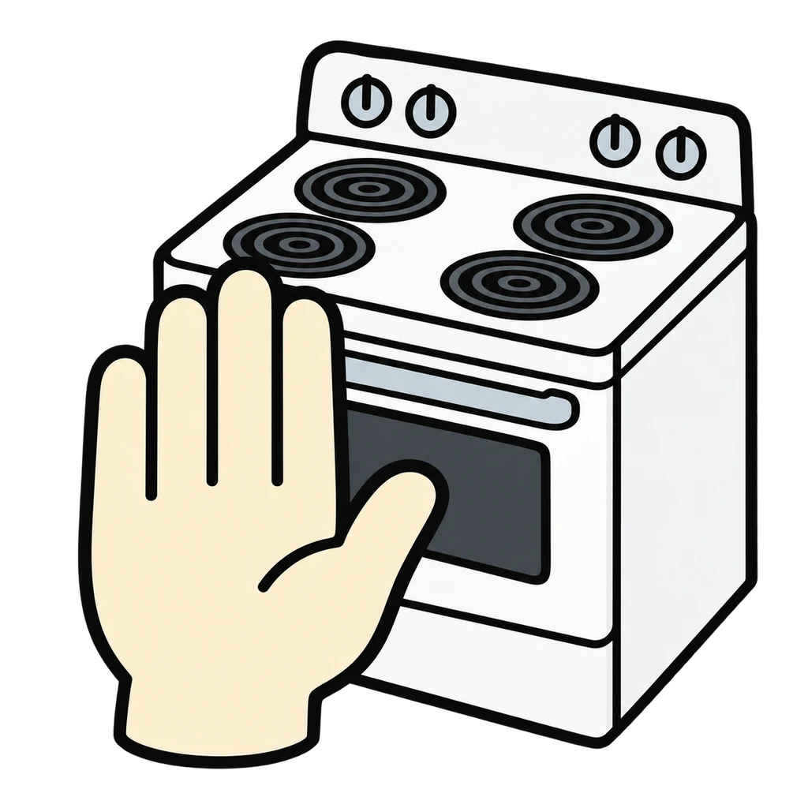
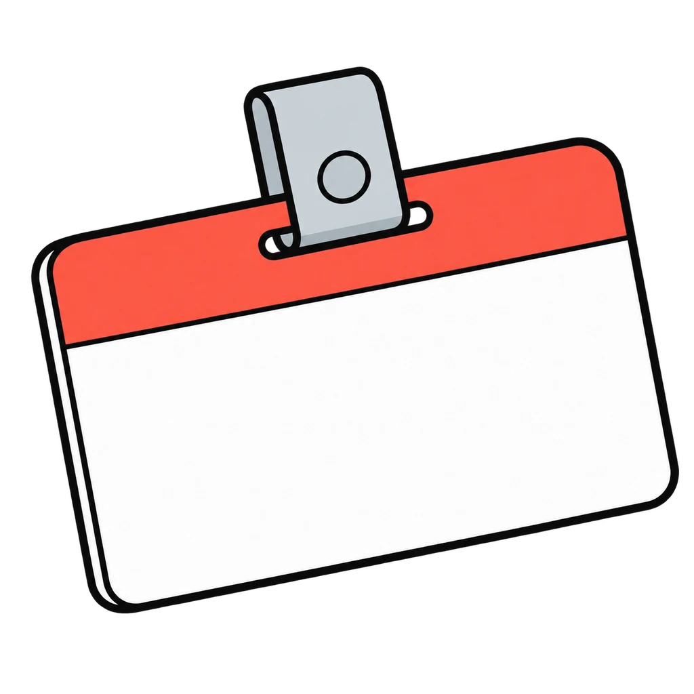
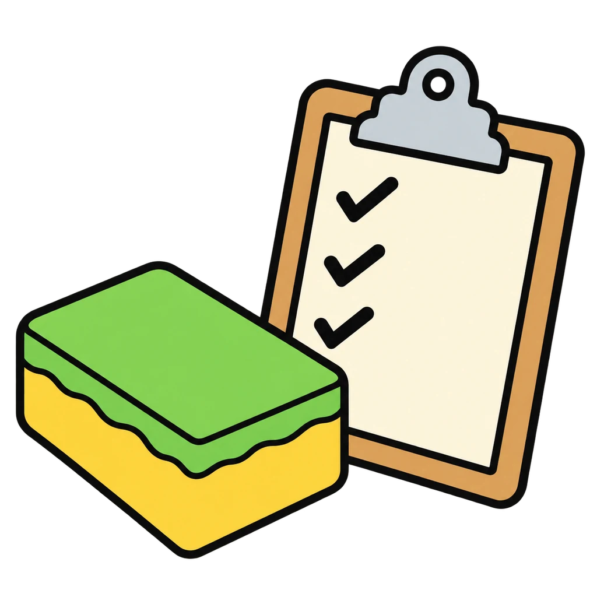
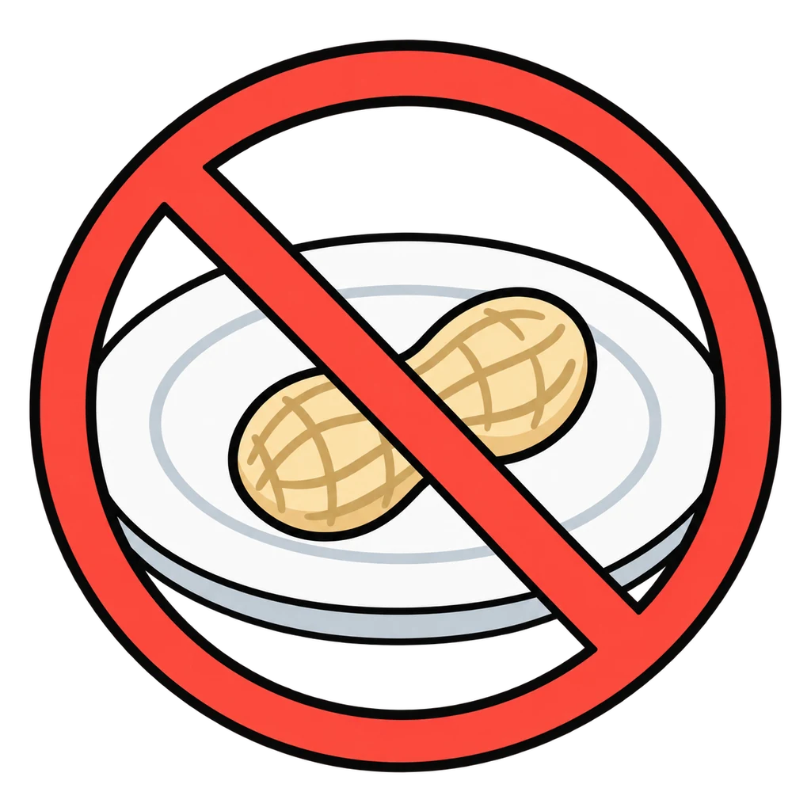

Reviews Lesson 0.4, Lesson 0.5. Reviews Lessons 0.4 and 0.5 together. Round 1 is the norms test from Handout 00.04: a line appears and the student sorts it as a norm someone could see or a feeling; the feeling misses show the handout key's rewrites (respect becomes we let one person finish before the next one talks). Round 2 sorts sixteen lines of the Room and Lab Agreement into six of its sections (the reset cue and section 8 are left out of the sort because section 7 is one cue and section 8 is the ladder at the end of the round), and the feedback says whether that section was up for a vote. The round ends with the three steps of what happens when it is broken, tapped into order. Use it as the do now before Lab 1 (Lesson 1.8), when the signed contracts are reread, and the week before the Kitchen Safety Exam (Assessment 01.1), which assesses the agreement's rules. It leaves out section 4's six-step routine line because Station Rush already reviews that routine.
Rules We Wrote
A line appears. Tap it into a norm someone could see or a feeling. Then a line from the Room and Lab Agreement appears, and you tap the section it lives in, ending with the three steps when a rule is broken.
How to play
- Test every norm with the question: Could Mr. Prevosto see us doing this? If not, rewrite it.
- A norm is a behavior someone could see. "Be nice" is a feeling. "Ask the quiet person before we decide" is a norm.
- That line is section [number], [section name]. [Not up for a vote. / We wrote it together.]




Done
The ones to study:
Worth knowing by heart:
- A norm is a behavior someone could see. Test it: Could Mr. Prevosto see us doing this?
- The eight sections of the Room and Lab Agreement: safety, respect, roles, clean up, phones, food rules and allergies, the reset cue, what happens when it is broken. Sections 1 and 6 are not up for a vote.
- Anyone can be a first-timer. Nobody is a third-timer by accident.